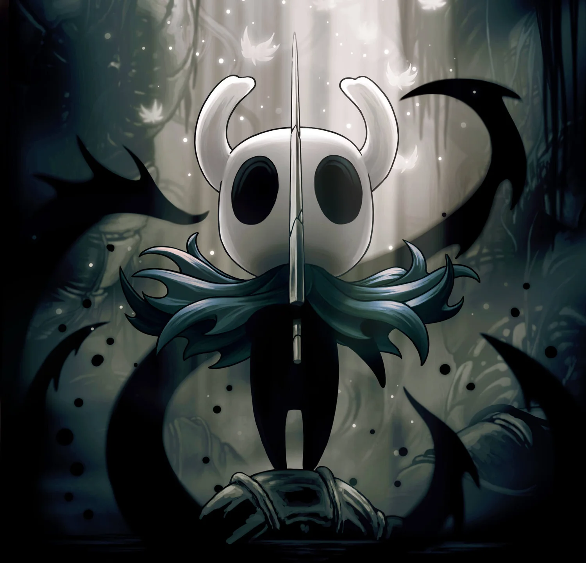

| Hollow Knight | ||
|
Menu Sobre Protagonista Silksong |
Protagonista — O Cavaleiro  O protagonista de Hollow Knight é um pequeno cavaleiro sem nome e sem voz, conhecido apenas como O Cavaleiro. Ele chega ao reino subterrâneo de Hallownest, um lugar antigo e grandioso que agora está em ruínas, tomado por uma praga chamada Infecção, capaz de corromper os habitantes e transformá-los em criaturas agressivas. Durante sua jornada, o Cavaleiro explora cavernas, cidades esquecidas e templos misteriosos, enfrentando inimigos, chefes poderosos e conhecendo personagens enigmáticos que revelam aos poucos a história trágica do reino. Aos poucos, ele descobre que Hallownest tentou conter a praga criando um recipiente vazio chamado Hollow Knight, destinado a aprisionar a Infecção. Porém, esse selo não se manteve perfeito, e cabe ao Cavaleiro decidir o destino do reino: enfrentar o Hollow Knight e substituí-lo como recipiente, ou buscar caminhos alternativos que podem libertar Hallownest de vez. Mesmo sendo pequeno e silencioso, ele carrega a responsabilidade de determinar o futuro de todo o reino. |
Links Externos Wiki Jogo na Steam Wiki Silksong |
| Copyright © 2025 — Rocha | ||